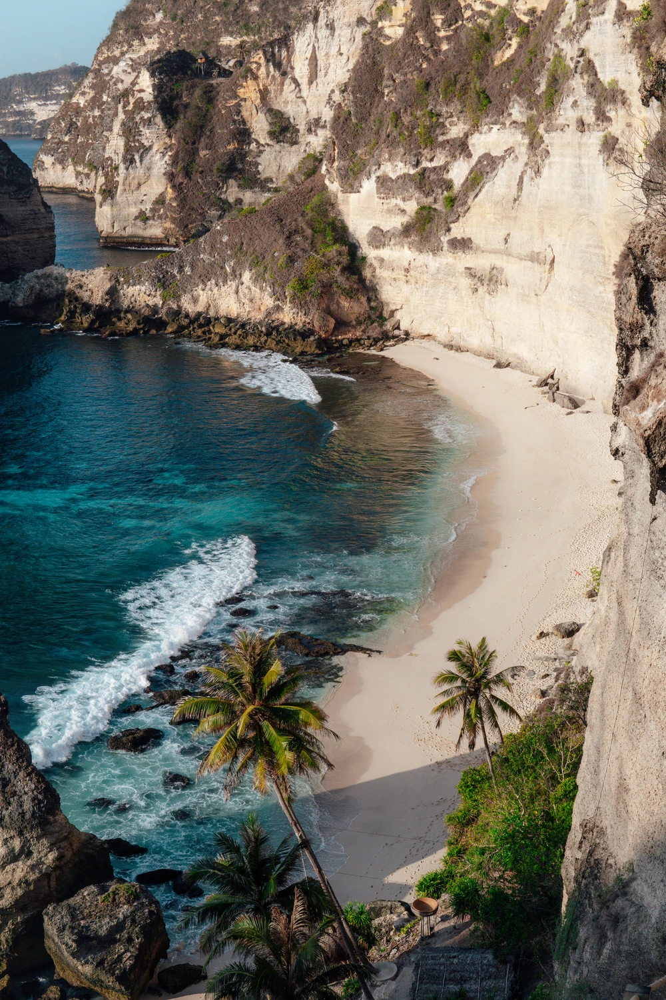
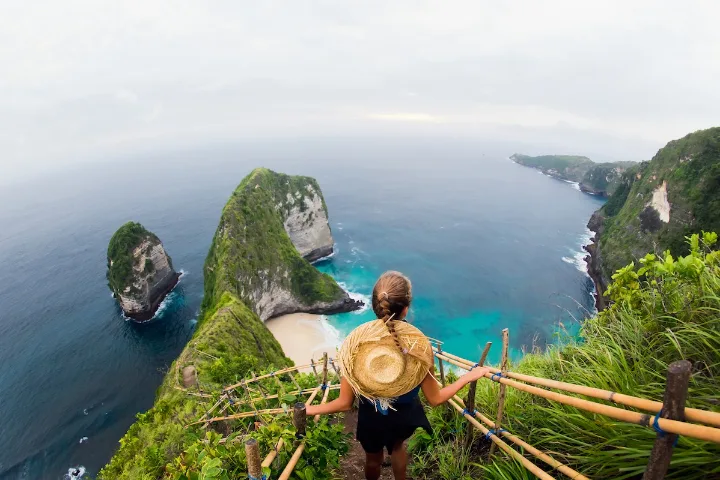
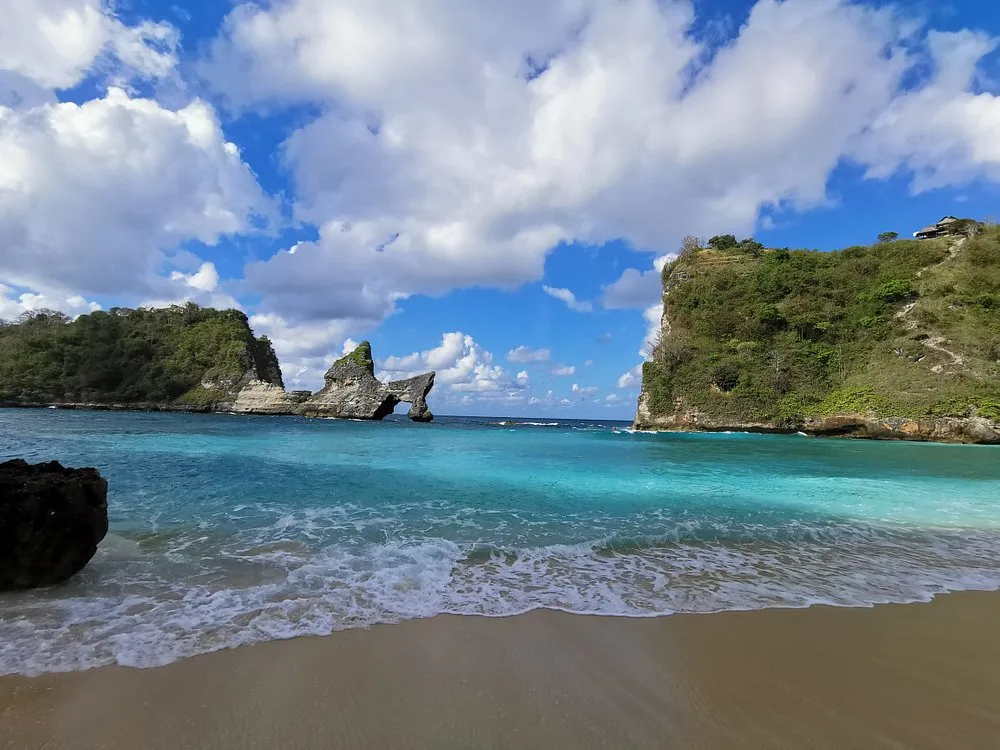
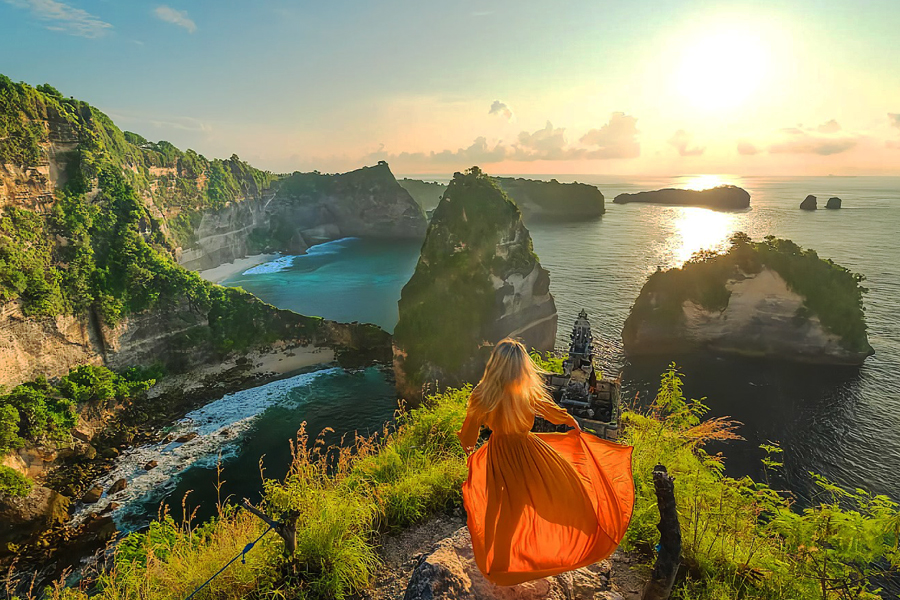
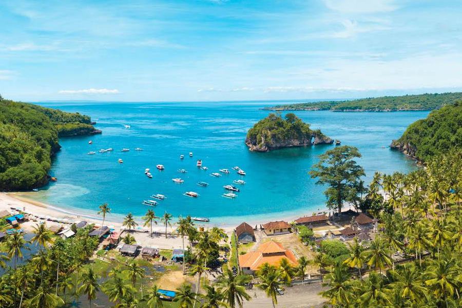

Nusa Penida is an enchanting island just a short fast-boat ride from mainland Bali. It invites you to step away from the bustling tourist hubs and immerse yourself in a world of raw, untamed natural beauty. From dramatic coastal cliffs to vibrant underwater ecosystems, this hidden gem has become a go-to destination for travelers seeking an unforgettable adventure.

The Dramatic West Coast Wonders
The western side of Nusa Penida is famous for its jaw-dropping cliff formations and unique geological marvels.
Kelingking Beach
Often referred to as the crown jewel of the island, Kelingking Beach is arguably the most iconic location on Nusa Penida. Its unique cliff formation resembles a T-Rex and offers a dramatic panorama of turquoise waters crashing against pristine white sand far below.

Broken Beach & Angel's Billabong
Just a short drive away lies Broken Beach (Pasih Uug), a spectacular circular cove encircled by towering cliffs with a natural rock archway. A short walk from there is Angel's Billabong, a naturally formed crystal-clear infinity pool carved into the rugged cliffs, perfect for stunning photography during low tide.

Experience the West Coast
Want to see these iconic spots without the stress of navigating the island's rugged roads? Our dedicated team ensures a seamless journey.
View West Nusa Penida TourThe Untouched East Coast Marvels
For those seeking a more secluded escape, the eastern coast offers breathtaking panoramic perfection and dramatic coastal scenery.
Diamond Beach & Atuh Beach
Diamond Beach is named after the sharp, diamond-shaped karst formations rising gracefully from the crystal-clear ocean. Right next door is Atuh Beach, a hidden gem offering a tranquil retreat with soft white sand framed by unique rock formations.

Thousand Islands Viewpoint & Tree House
Also known as Raja Lima, this viewpoint offers one of the most breathtaking panoramic vistas on the island, featuring scattered rock formations across the ocean. Nearby, you will find the famous Molenteng Tree House, providing a magical backdrop for your vacation memories.

Discover the East Coast
Explore the less-traveled, breathtaking side of Nusa Penida with a comprehensive itinerary designed for nature lovers and photography enthusiasts.
View East Nusa Penida TourWorld-Class Underwater Adventures
Beyond its towering cliffs, Nusa Penida is a world-renowned destination for spectacular marine life and pristine coral reefs.
Manta Point & Crystal Bay
Snorkeling in these nutrient-rich waters provides the exhilarating opportunity to swim alongside magnificent Reef Manta Rays. Crystal Bay, highly regarded for its excellent visibility and calm waters, is a snorkeling paradise teeming with vibrant tropical fish and colorful coral gardens.

Dive Into The Blue
Ready to explore the underwater world? We provide all the gear, boat transfers, and local expertise for an unforgettable day in the water.
View Snorkeling TourPlan Your Perfect Island Escape
Whether you are an adventure seeker, a photography lover, or someone looking to relax by pristine shores, Nusa Penida truly delivers. At Bali Real Vacation, our tailored private tours and day trips ensure you experience the absolute best of this tropical paradise comfortably and affordably. Let us turn your dream vacation into a reality!